Nothing in the guide matches that search. Try a shorter word, like “count” or “query”.
Start here
For everyone
Log in
Admin gives you a username and a temporary password.
Open the app address your office gave you (for example https://stock.yourcompany.com).
Type your Username and Password, then click Log in.
The first time, the app asks you to pick a new password. Type the old one once and the new one twice.
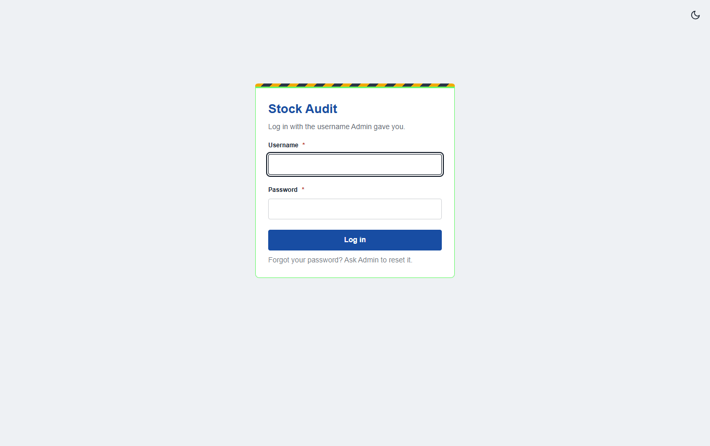
5 wrong passwords in a row lock your login for 15 minutes. Forgot it? Ask Admin to reset it. If you leave the app idle for 8 hours, you are logged out.
Your home page: what is waiting for you
After you log in, the home page lists the work waiting for you.
Look at the tabs under My pending items: Replies to write, My actions, To verify, To close. The number on each tab is how many are waiting.
Click a tab, then click the Item No (blue link) to open that query and do the work.
Use the menu at the top: Dashboard, Audits, Queries, Items. Your name on the right opens your profile, password and Log out.
Working for more than one company? Pick the company in the box at the top.
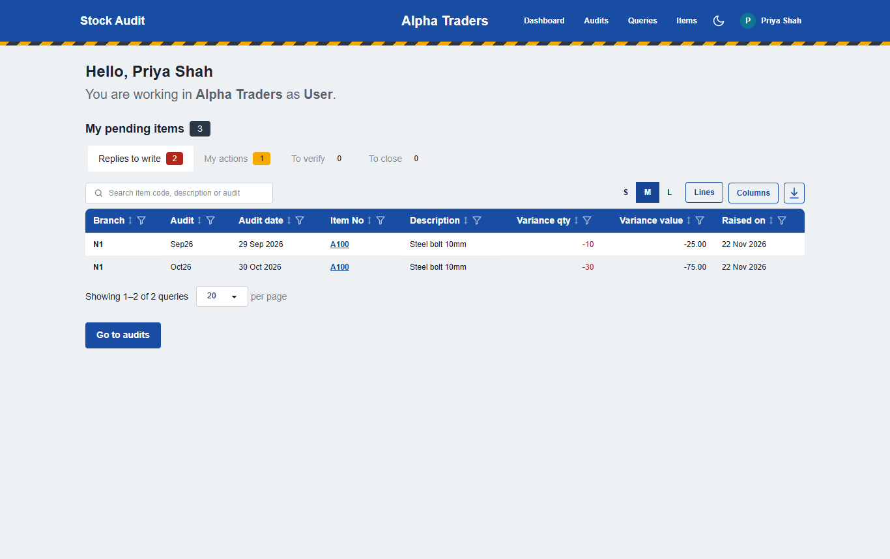
Example: Priya has 2 replies to write and 1 action to finish.
On a phone, the menu sits behind the ☰ button at the top right.
How an audit moves
Every audit goes through 4 stages, one after the other. The current stage is shown in blue under the audit name.
Checking DoneCount finished. Queries raised for Excess / Shortage.Auditor
LockedAudit closed. Only Admin can reopen.Manager
Example: ERP says 400 bolts, auditor counts 370. Difference −30 is a Shortage, so at Checking Done a query is raised. Priya replies “30 issued to site without slip”, Mohan adds an action “Raise issue slip”, Priya marks it Done, Mohan verifies and closes the query.
A query moves: Open → Reply Submitted → Action Pending → Closed. A query that is not Closed when the audit is locked is carried forward and shows up in the Branch's next audit.
What you can do depends on the rights Admin gave you in each Branch. If a button is missing, you don't have that right there. Ask Admin.
Using lists and tables
Every list (audits, queries, items, users…) works the same way.
Search box: type part of a code or name to narrow the list.
↕ arrows on a heading: click to sort. Funnel icon: filter that column (for example only “Shortage”).
S / M / L: make rows smaller or bigger. Columns: show or hide columns.
⤓ download button: saves all matching rows as a CSV file you can open in Excel.
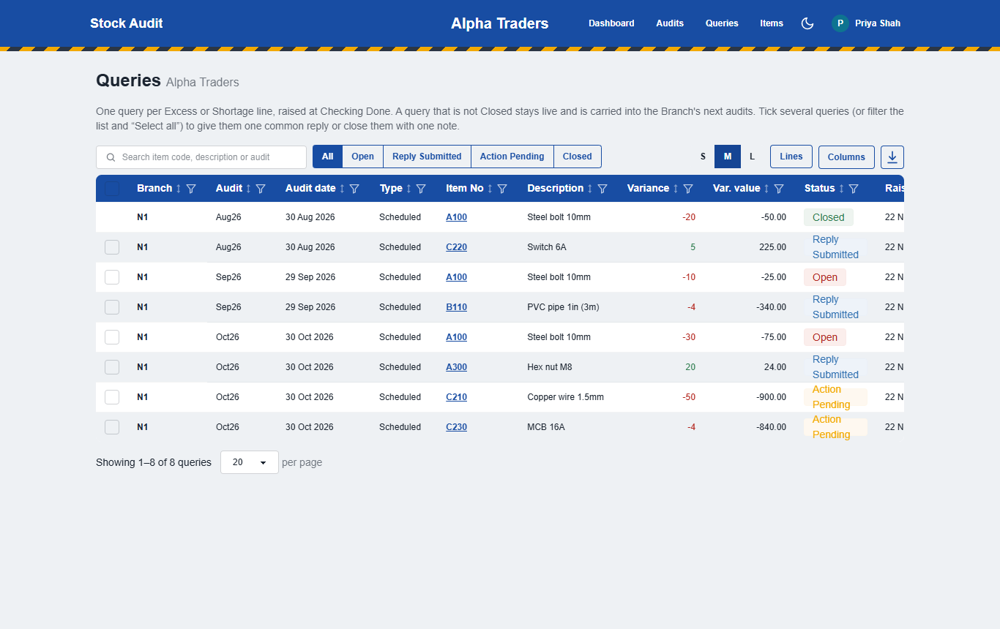
Change your photo or password
Click your name at the top right, then My profile and photo to add a photo and see your companies and rights.
Click Change password to pick a new password (at least 8 characters).
The moon/sun icon at the top switches between light and dark screens.
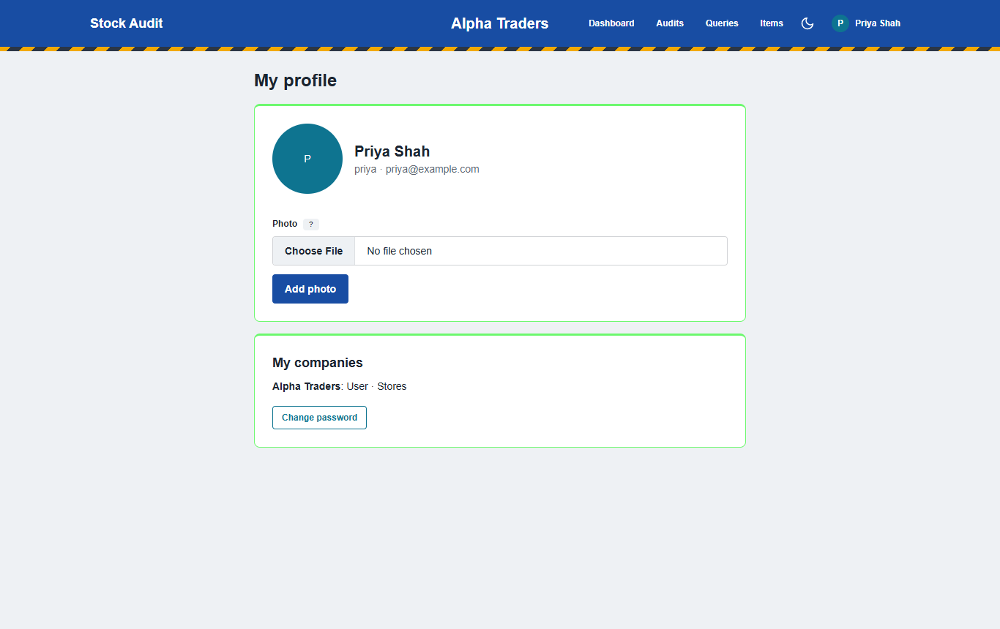
Admin
Set up the app and look after users
Add a company and its Branches
Do this once, before anyone else starts. Companies and Branches are never deleted; you deactivate them.
Top menu Admin → Companies, then Add company. Type the name, address and (optional) logo. Click Save company.
Admin → Branches, then Add Branch. Pick the company, type the Branch name and a short code (for example N1 – North). Click Save Branch.
Optional: Admin → Departments to add departments like Stores or Finance.
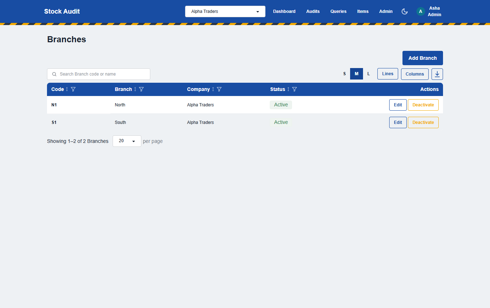
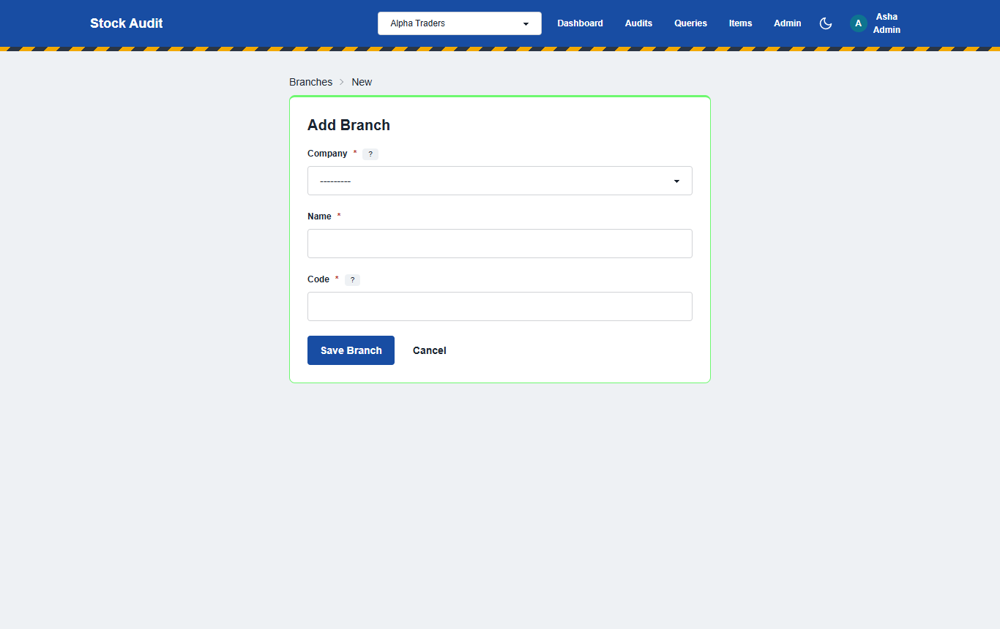
Add a user
Admin → Users, then Add user.
Type the username, full name, email and a temporary password. Click Add user. Tell the person their username and temporary password; they must change it at first login.
On the user's page, under Companies and rights, pick the Company and Role (Manager, User, Auditor or Viewer) and click Add to company.
Pick the Department if you use them.
Click Branch rights to choose what they can do in each Branch (next step).
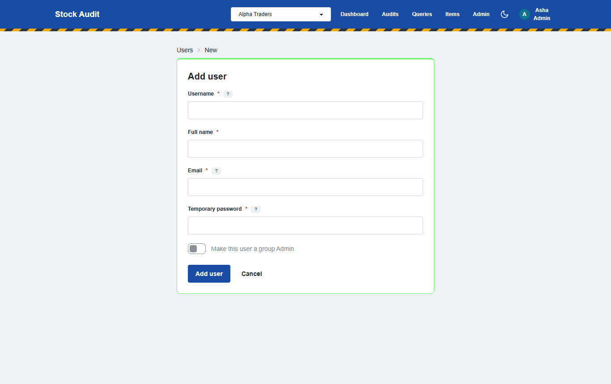
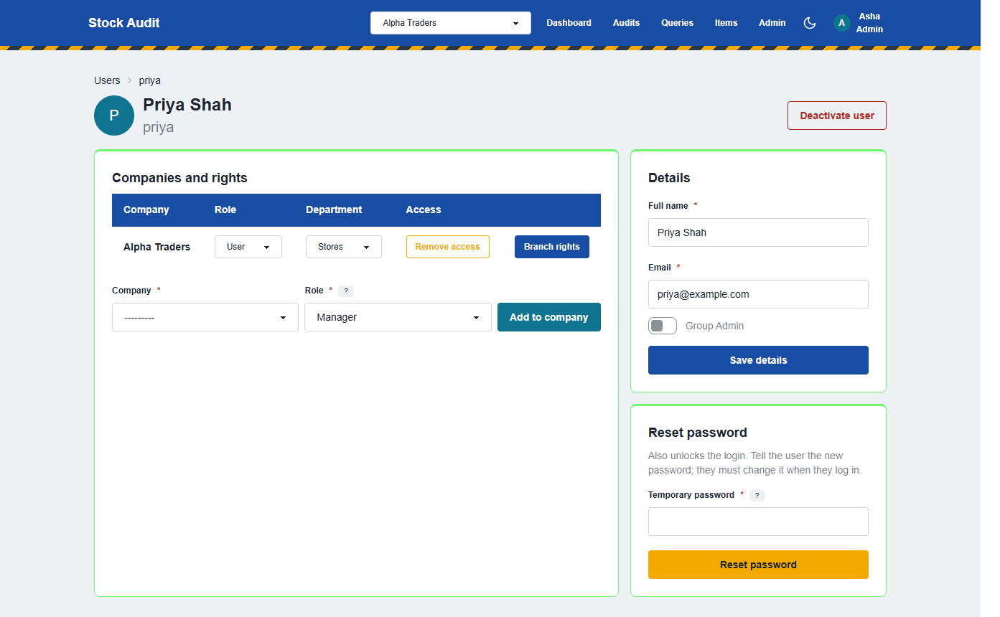
The user page: company and role on the left, details and password reset on the right.
Give rights per Branch
The role only gives starting ticks. You decide the real rights for each Branch. The same person can have different rights in different Branches.
From the user's page click Branch rights.
Tick what they may do in each Branch row. A Branch with no ticks is hidden from them.
Same ticks for every Branch? Set one row and click Apply to all.
Same as another person? Pick them in Copy rights from and click Copy.
Click Save rights.
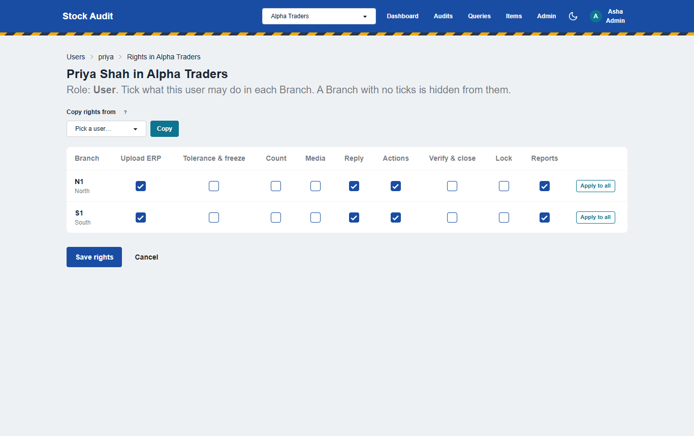
Right
Lets the person…
Usually
Upload ERP
create audits and upload ERP stock files
User
Tolerance & freeze
set tolerance and freeze ERP stock
Manager
Count
enter counts and remarks, mark Checking Done
Auditor
Media
upload photos, videos and files
Auditor
Reply
reply to queries
User
Actions
create and assign actions, mark them done
User, Manager
Verify & close
verify actions and close queries
Manager
Lock
lock audits
Manager
Reports
see the dashboard and reports
Everyone
Example: Ravi is an Auditor in North (Count + Media) but a Manager in South (Tolerance & freeze + Lock).
Reset a password, deactivate a user
Admin → Users and click the user.
Forgot password or locked out: type a temporary password under Reset password and click Reset password. This also unlocks the login.
Left the company: click Deactivate user. Users are never deleted, so their history stays.
No longer works for one company: click Remove access on that company's row.
Reopen a locked audit
Only Admin can do this, and a reason is required. The audit goes back to Checking Done (counts still can't change).
Open the locked audit from Audits.
Click Reopen audit.
Type the reason, for example “Photo of rack C missing from report”, and click Reopen audit.
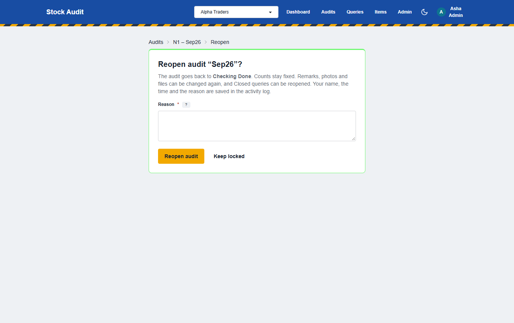
Cancel a wrong audit
Used when the wrong ERP file was frozen and nobody has counted yet. Then create a new audit.
Open the audit and click Cancel audit.
Type the reason and confirm with Cancel audit. (Keep audit = go back.)
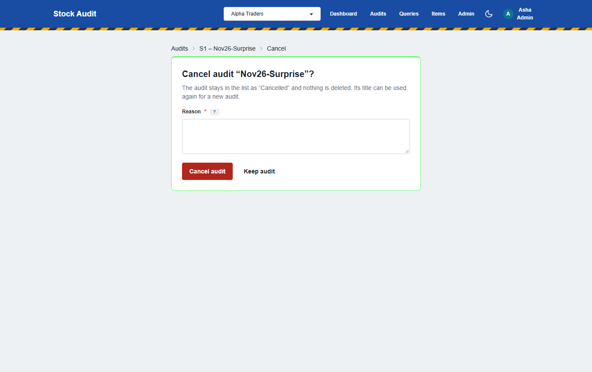
Once any line has a count, the audit can no longer be cancelled.
See who changed what (Activity log)
Admin → Activity log.
Search by user, record or words (for example the reopen reason). Each row shows the time, user, old value and new value.
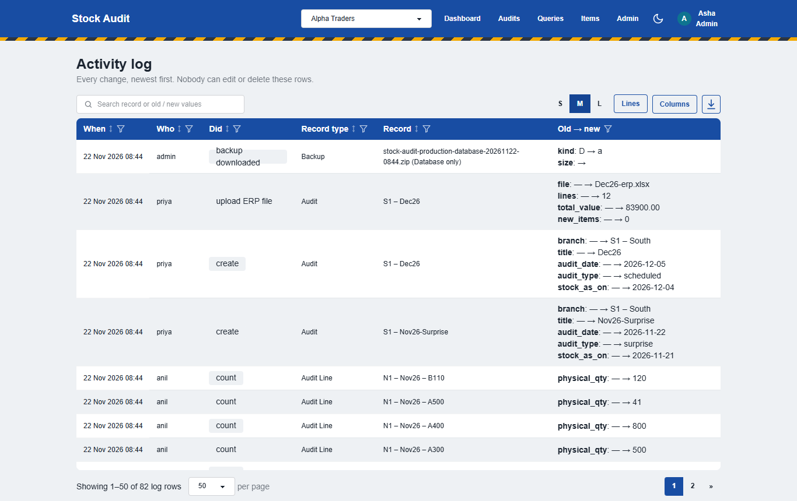
Nobody, not even Admin, can edit or delete the log.
Download a backup
Do this at least once a week. A yellow banner reminds you after 7 days.
Admin → Backup.
Click Download backup (database + media) for a full copy with photos, or database only for a small quick copy.
Keep the zip file somewhere safe, away from the server (for example a USB drive or company cloud folder).
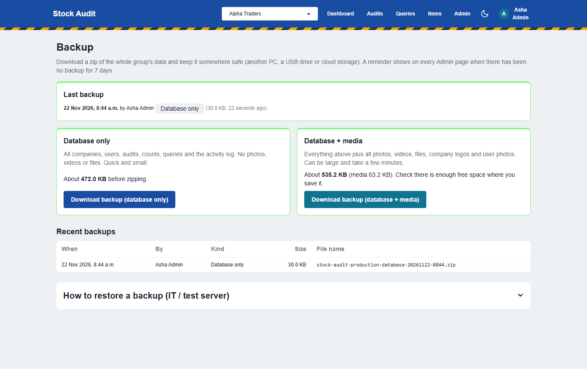
User
Stockkeeper / office staff
Create an audit
Click Audits in the top menu, then New audit.
Fill in: Branch, Title (for example Nov26), Audit date (the day of counting), Type (Scheduled or Surprise), and ERP stock as on (the date of your ERP stock report).
Click Save. The audit opens in stage ERP Draft.
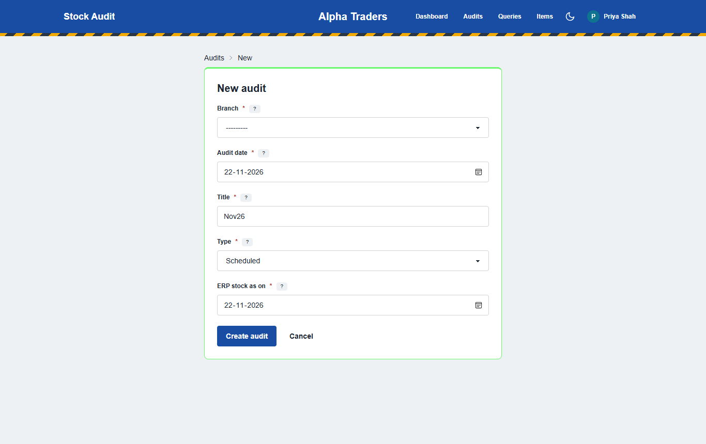
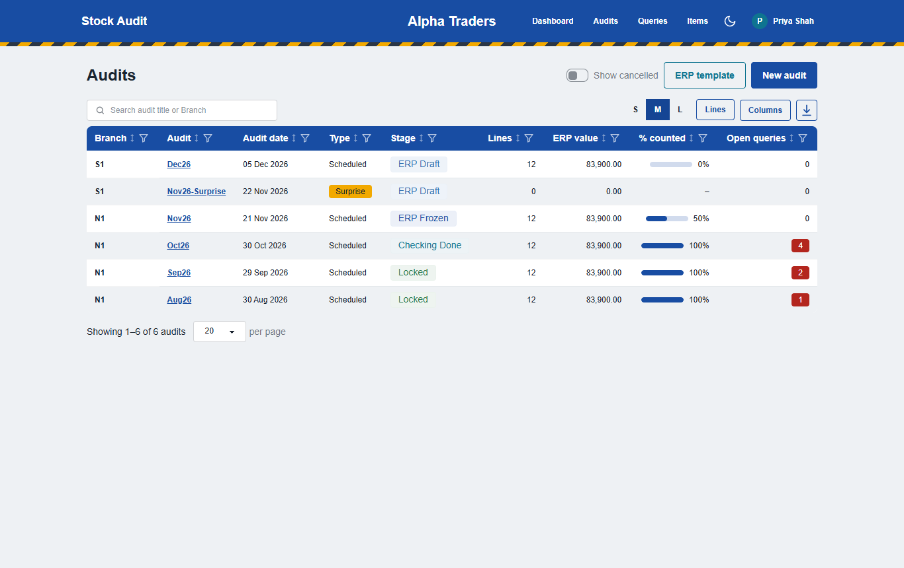
The Audits list shows each audit with its stage.
Upload ERP stock
You copy your ERP stock report into the template and upload it. You always see a preview first; nothing is saved until you confirm.
Open the audit. In Upload ERP file, click the ERP template link to download it.
Copy from your ERP report into the columns Item No, Description, UoM, ERP Qty, Rate p.u. Save the file (Excel .xlsx or .csv).
Click Choose File, pick the file, click Check file.
Read the preview:
Errors (red) must be fixed in your file, then upload again. Example: “abc” in ERP Qty, or the same item twice.
Warnings (yellow) need a tick to go ahead. Example: ERP Qty is −1.
New items: codes not yet in the item list. They are added automatically, marked “New”.
All fine? Tick the warning box (if shown) and click Confirm and save.
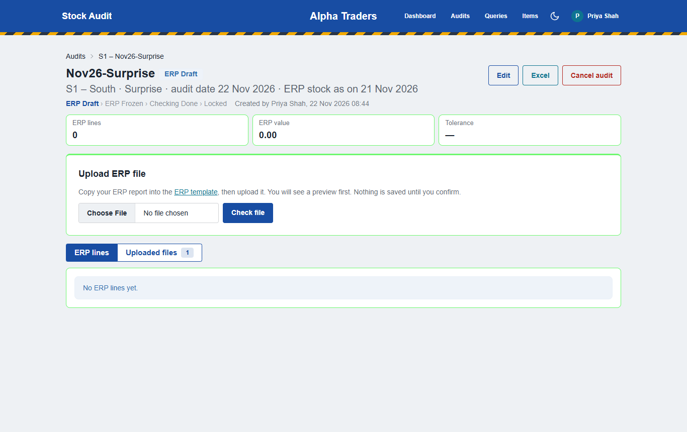
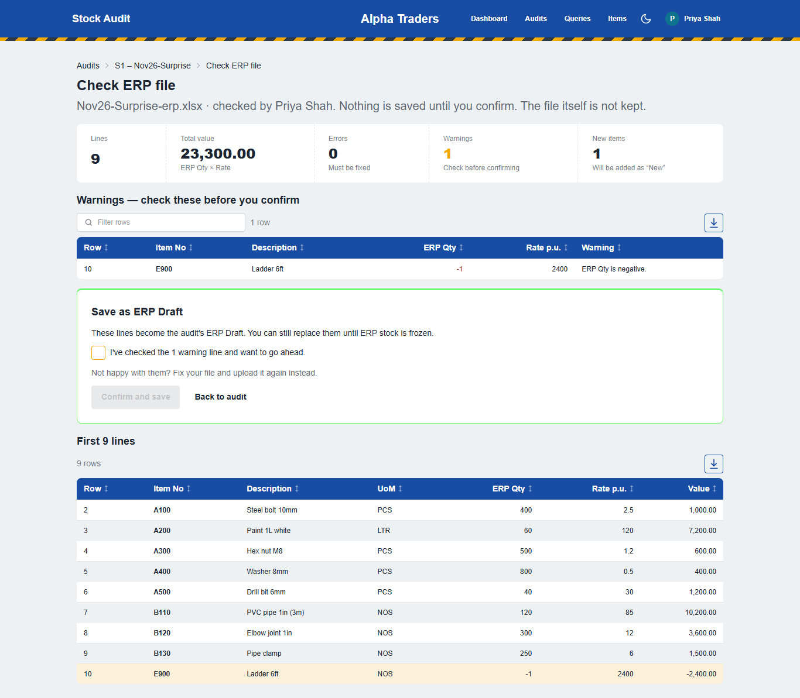
The preview: 9 lines, 0 errors, 1 warning (negative qty) and 1 new item.
Uploaded the wrong file? While the audit is in ERP Draft, just upload the right one; it replaces the old lines. After the Manager freezes, it can't be changed.
Reply to a query
A query asks “why is there a difference?” for an Excess or Shortage line. One reply per query; you can add updates later.
On your home page, open the Replies to write tab (or click Queries in the top menu).
Click the Item No to open the query. You see ERP qty, Physical qty and the variance.
In the Reply tab, explain the difference. Example: “2 cartons sent to Branch B on 28 Aug, no slip raised.”
Click Submit reply. The status becomes Reply Submitted.
Have proof? Add it in the Photos & files tab.
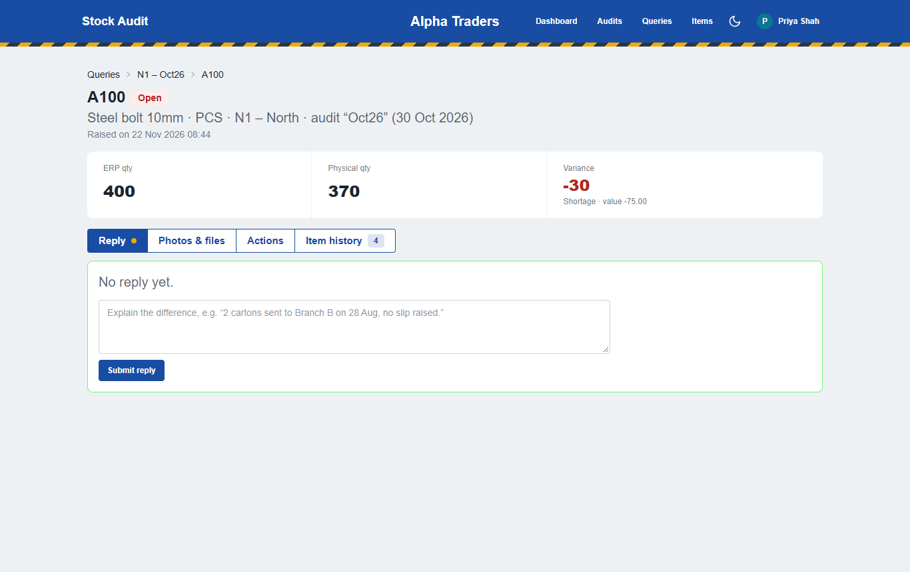
Many queries with the same answer? In the Queries list, tick them and type one common reply.
Item history shows the same item in every audit of the Branch, so you can spot a problem that keeps coming back.
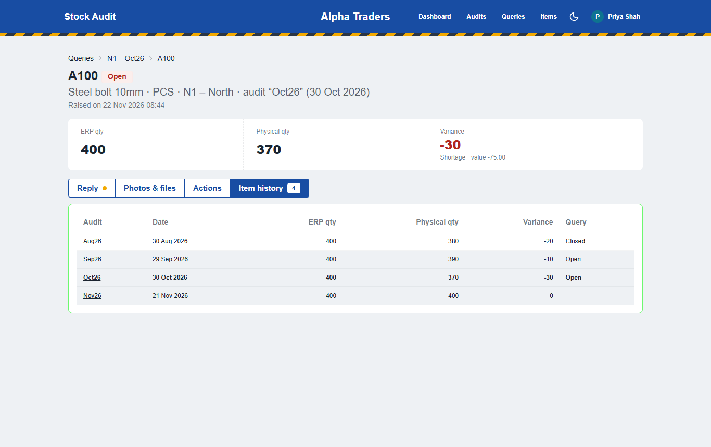
Finish an action given to you
On your home page open My actions.
Open the query, go to the Actions tab and read what needs to be done and by when. Overdue dates are red.
Do the work (for example raise the slip in ERP). Attach proof under Photos & files if needed.
Click Mark Done. Clicked by mistake? Use Undo Done until it is verified.
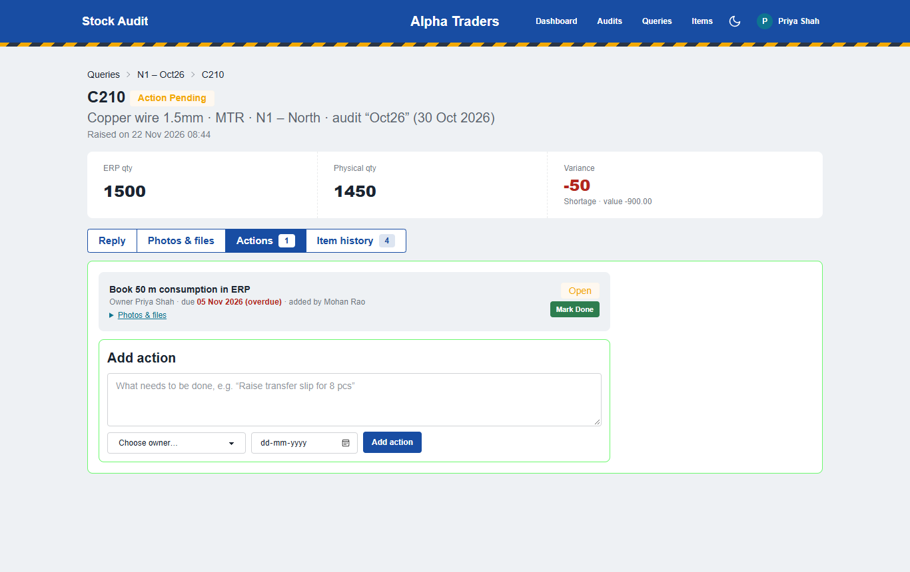
Review new items
Click Items in the top menu, then Show new items.
Check the code, description and unit. Click an item to fix it.
Tick the checked items and remove the “New” mark.
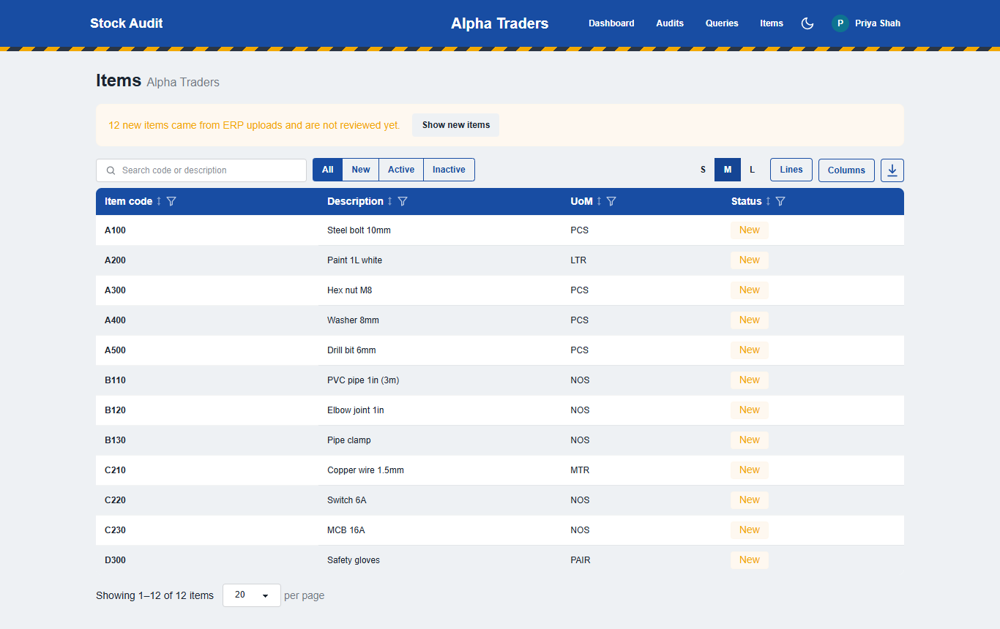
Manager
Freeze, follow up and lock
Set tolerance and freeze ERP stock
Tolerance is the small difference you accept. After freezing, the ERP lines can't change and the auditor can start counting.
Open the audit (stage ERP Draft, ERP file confirmed) and click Tolerance & freeze.
Check the summary: lines, total value, negative lines, new items.
Type the Quantity tolerance (for example 2) and, if you want, the Percentage tolerance (for example 5).
Tick “I understand…” and click Freeze ERP stock.
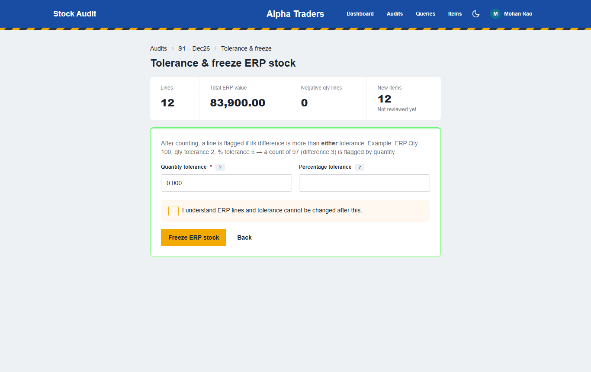
Example: ERP 100, qty tolerance 2, % tolerance 5. A count of 97 (difference 3) is more than 2, so it is flagged. A count of 99 is not.
Add an action to a query
Open the query and go to the Actions tab.
Type what needs to be done. Example: “Raise transfer slip for 8 pcs”.
Pick the owner and, if needed, a due date. Click Add action.
The query becomes Action Pending and the owner sees it under My actions.
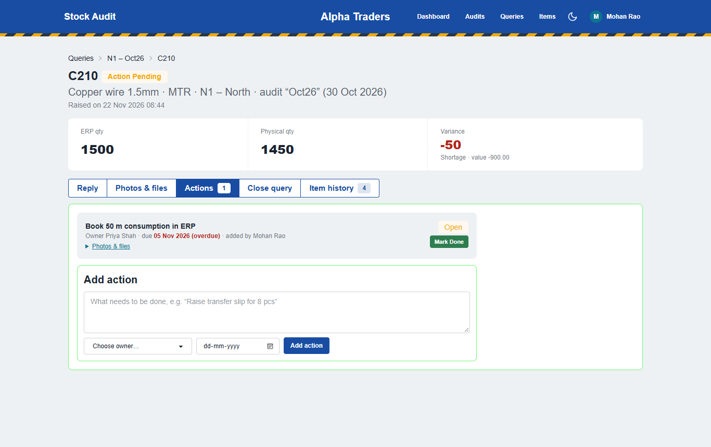
Verify the action and close the query
On your home page open To verify. Open the query, Actions tab.
Check the work, then click Verify. This can't be undone.
When every action is verified (or no action was needed), open the Close query tab, add a note if you like, and click Close query.
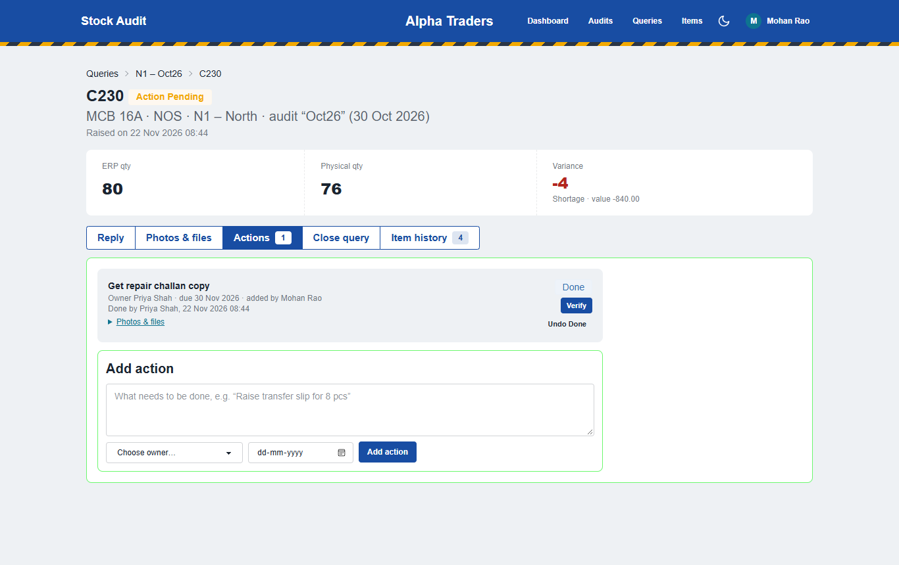
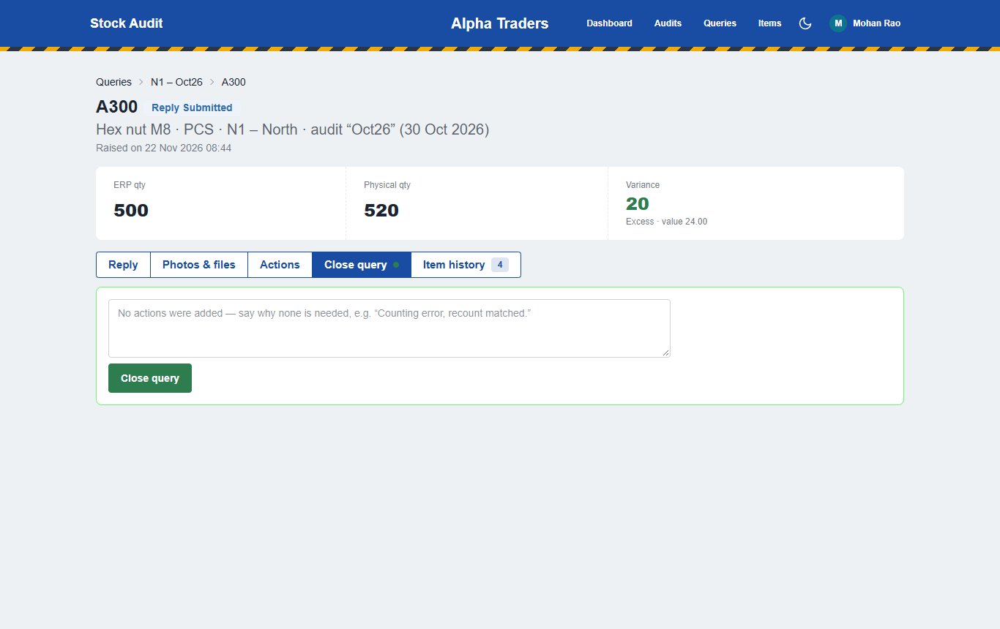
See “Can't close yet: 1 action not Verified yet”? Verify the action first. A closed query can be reopened with Reopen query; it goes back to Open.
Lock an audit
Locking closes the audit after Checking Done. Queries that are still open carry forward to the next audit.
Open the audit (stage Checking Done) and click Lock audit.
Read the summary: how many queries are still open and will carry forward.
Tick “I understand…” and click Lock audit.
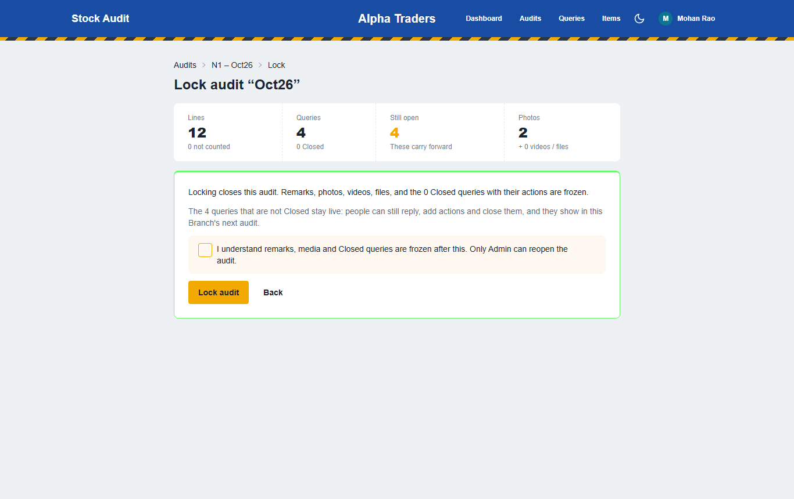
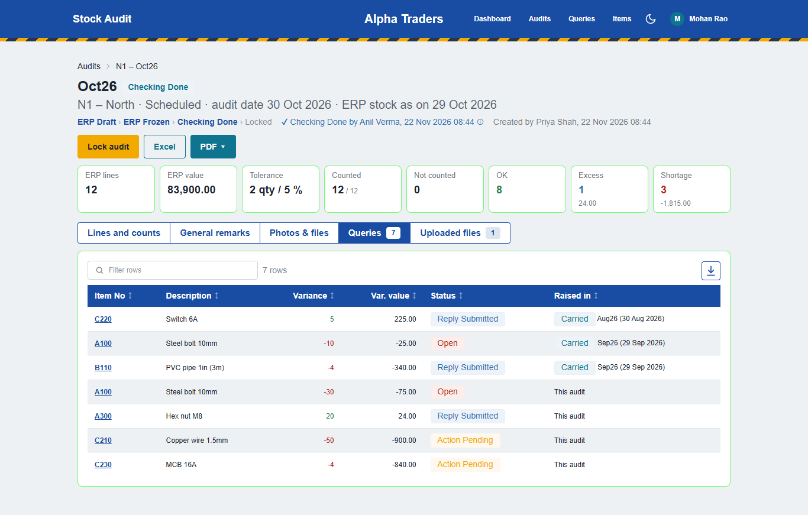
An audit's Queries tab also lists open queries carried from earlier audits.
Auditor
Count, note and photograph
Count in the app (phone or computer)
You can count once the audit is ERP Frozen. Each count saves on its own.
Click Audits and open the audit.
Find the item with the search box (code or description).
Type the quantity in the Physical Qty box and press Enter (or tap outside the box). It saves straight away.
Leave a box empty if you have not counted it yet. Type 0 if the item is really not there.
Use the buttons Not counted / Excess / Shortage / OK to see what is left or what differs.
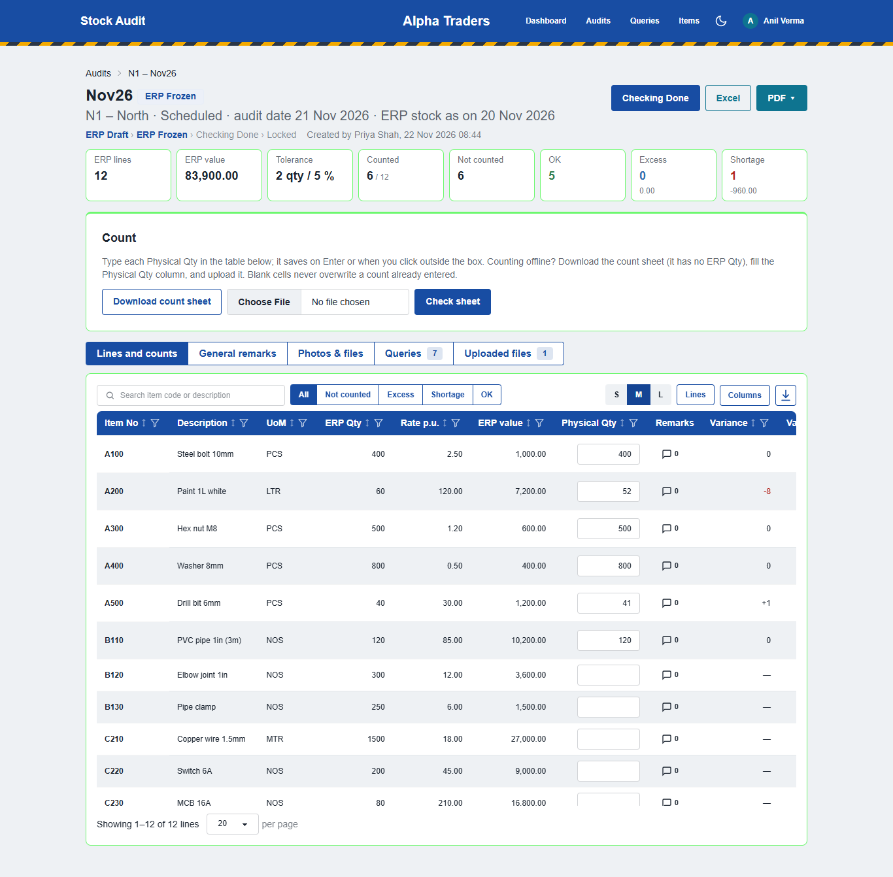
The boxes at the top update as you count: Counted, Not counted, OK, Excess, Shortage.
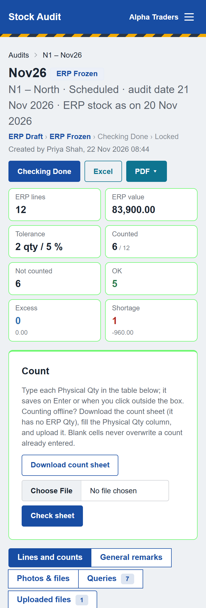
The same screen on a phone.
Count offline with the Excel count sheet
No internet in the godown? Count on a sheet and upload it later. The sheet has no ERP Qty, so the count is blind.
Open the audit and click Download count sheet.
Fill the Physical Qty column (and Remark if needed). Don't change the item codes.
Back online, click Choose File, pick the sheet, click Check sheet.
Check the preview (errors like unknown item codes or text in Qty must be fixed). Then confirm.
Empty cells in the sheet never wipe out counts already typed in the app. You can upload sheets until Checking Done.
Add remarks and photos
Remarks are notes only; they never raise a query.
For one item: click the speech-bubble icon in the Remarks column. Type a remark and click Add remark. Add photos or files for that item in the same window.
For the whole audit: open the General remarks tab. Example: “No security at back gate.”
Audit photos: open the Photos & files tab, choose files, add a short note, click Add.
Tick In report on the photos you want printed in the PDF.
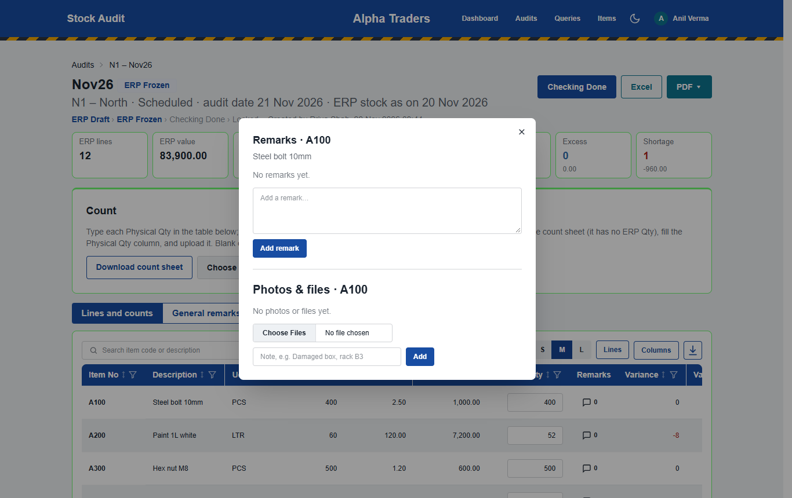
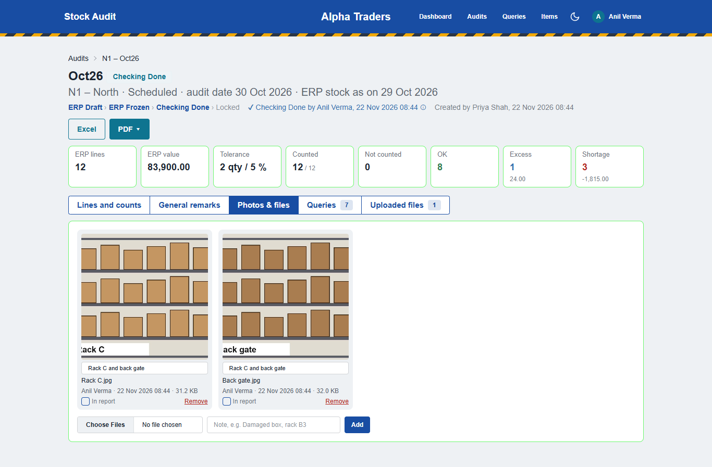
Limits: photos up to 10 MB, videos up to 100 MB, other files (PDF, DOCX, XLSX) up to 5 MB.
Mark Checking Done
Tells everyone the count is complete. Queries are raised for every Excess and Shortage line.
Open the audit and click Checking Done.
Check the summary: counted, not counted, excess and shortage lines, and how many queries will be raised.
Tick “I understand…” and click Mark Checking Done.
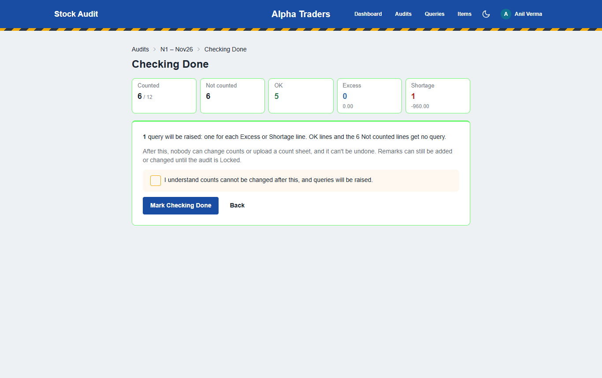
This can't be undone, not even by Admin. After this, counts can't be changed and no count sheet can be uploaded. Lines left empty stay “Not counted” and show in the report.
Dashboard and reports
Needs the Reports right
Dashboard
One place to see what is pending across your Branches.
Click Dashboard in the top menu.
Set the filters at the top (Branch, Items, From / To month, Type) and click Apply.
The tiles show audits done, % counted, open queries, pending actions and net variance (excess minus shortage).
Tabs: Audit status (every audit and its stage), Queries & actions (how old open queries are, overdue actions), Trend (variance over time), Repeat items (items with a difference in audits in a row).
Click a number to see the rows behind it. Every table has a download button.
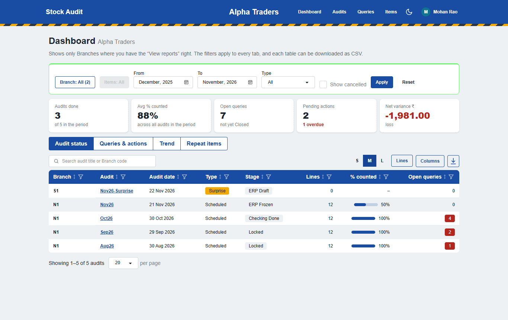
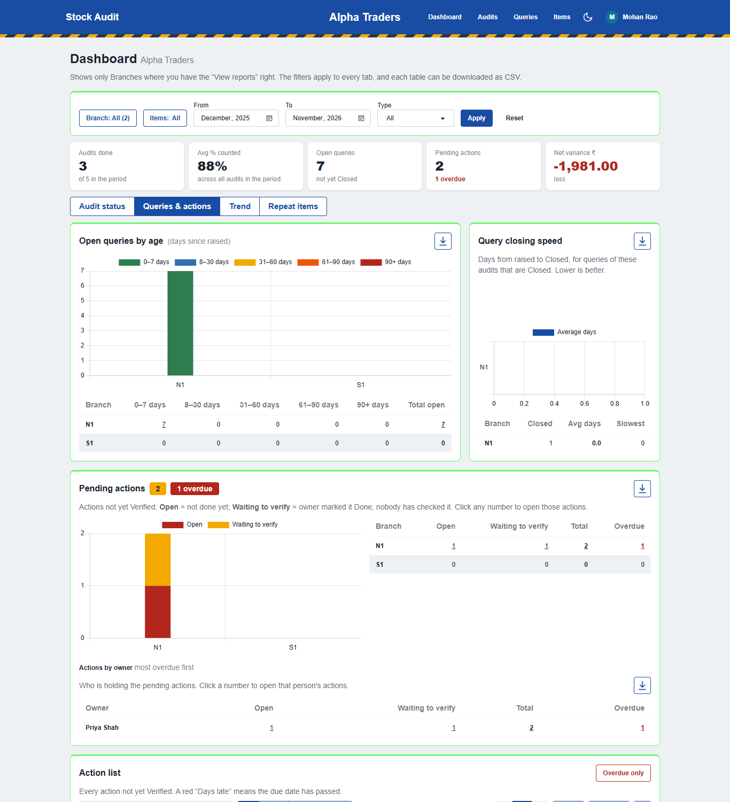
PDF and Excel reports
Open an audit.
Excel downloads all lines, variances, remarks, queries and actions.
PDF ▾ opens a small menu; pick the options and click Download PDF. The PDF has the count summary, Not counted lines, variances, remarks, queries, ticked photos and a signature block.
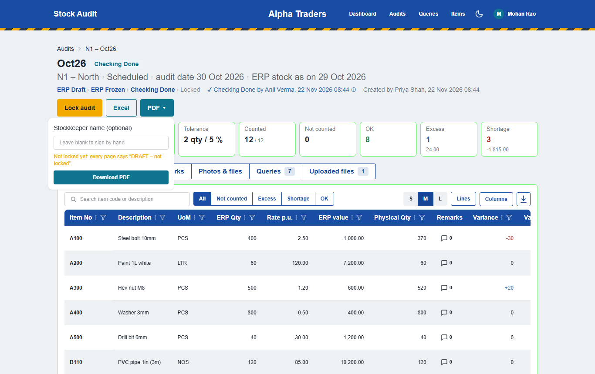
An audit that is not yet Locked prints with a “DRAFT” mark.
Questions and problems
I can't see a Branch or an audit.
You have no rights in that Branch. Ask Admin to tick at least one right for it.
A button (Freeze, Lock, Reply…) is missing.
Either you don't have that right in this Branch, or the audit is in a different stage. Check the stage under the audit name.
I typed a wrong count.
Before Checking Done: just type the right number. After Checking Done counts can't change; explain it in the query reply or a remark.
The ERP file was wrong.
Still ERP Draft: upload the right file again. Already frozen but not counted: ask Admin to cancel the audit and create a new one.
My login is locked.
Wait 15 minutes, or ask Admin to reset your password.
Why is a query still showing in the new audit?
It is not Closed yet, so it carries forward. Reply, finish the actions and close it.